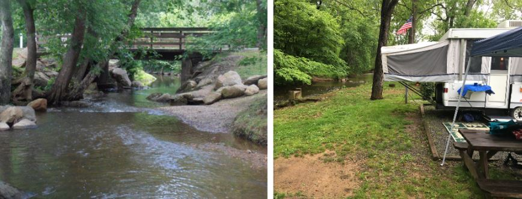

Misty Mountain Camp Resort
Location: Address: 56 Misty Mountain Rd Greenwood Virginia 22943
The Misty Mountain Camp Resort provides a wonderful, loosening up holiday at the foot of Blue Ridge Mountains near the historic city of Charlottesville, Virginia. Whether you're trying to find an exclusive vacation, a team event, or enjoyment with the children, Misty Mountain Camp Resort makes sure to satisfy your every need. The breathtaking 50 acre park offers personal campsites snuggled in the trees as well as a huge leisure structure with reception seats to fit any type of huge group for any type of event. There is a swimming pool, nature trails, a creek, fish in the pond, playgrounds, great hillsides for climbing, and hayrides.
Features to expect at the misty mountain camp resort
This resort has many features that will make anyone comfortable with their stay. Here are some of those features.
- Pets Allowed
- Fires Allowed
- Market
- ADA Accessible
- Toilets
- Picnic Table
- Electric Hookup
- Reservable
- Wifi
- Showers
- Drinking Water
- Phone Service
- Fires Allowed
- Alcohol Allowed
- Trash Pickup
Features available for your trailers and rvs
What would a resort like this be without catering to rvs and trailers? Here are some of the features you can expect when you visit.
- Sewer Hookups
- 30 amp Hookups
- 50 amp Hookups
- Sanitary Dump
- Water Hookups
- Pull-Through Sites
- Max Length of 100 ft.
Recreational activies at the misty mountain resort
- Pavilion
- Pedal Carts
- Swimming Pool
- Game Room
- PlaygroundRec Hall
- Stream
- Water Umbrella
- Bounce Pillow
- Splash Pad
- Planned Activities
- Nature Trails
- Creek
- Horseshoes
- Fishing
Recreational activities that are available nearby (10 miles)
- Hiking
- Boating
- Mountain Biking
- Snow Sports
- Rock/Mountain Climbing
- Snow Sports
- Kayaking
What about trails?
There are many trails available for hikers to enjoy. Here are some of the best trails for you to hike.
Humpback Rocks Hiking Trail

Starting at the south end of the Humpback Gap parking lot, gives accessibility to Humpback Rocks, Humpback Mountain which is 2 miles away, and also the Humpback Rocks barbecue location which is 3.9 miles away. If you a hiker, then you can get to Humpback Rocks from a spur path to the left. The exhausting 700-foot climb benefits walkers with magnificent sights of the Rockfish as well as Shenandoah Valleys. Typically, the Humpback Rocks route is highlighted with blue blazes on rocks, trees, as well as various other all-natural features that are just exciting to see. Sometimes, nonetheless, the route is likewise component of the Appalachian Trail and also might be noted in white. A solitary blaze suggests the route proceeds right while a dual blaze shows a forthcoming turn. Enable 1 hr to Humpback Rocks, 4 hours to the picnic area, and 2 hrs Humpback Mountain to the location.
Roughly half way up, the gravel roadway ends and the path ends up being a more conventional forest singletrack path. There are a great deal of little rocks utilized as natural stairs, and a couple of stairs manufactured from railway ties, also. The path is extremely apparent.
Mountain Farm Trail

Mountain Farm Trail is a 0.5 mile reasonably trafficked out and back path situated near Lyndhurst, Virginia and includes a fantastic forest setting. The trail is suitable for all hiking or walking levels and is mostly used for strolling and trekking. Canines are likewise able to use this path however should be kept on a leash.
Safety tips to take while hiking the misty mountain camp resort trails
- Bring lots of water
- Bring snacks
- Bring a first aid kit
- Be prepared to turn back if you encounter certain types of slippery or wet conditions, water crossings that are too high, or any type of ice that might be on the trail.
- Never ever walk anywhere close the top of any waterfall. Slippery or wet rocks are only a footstep away. Many people have actually been hurt, some fatally.
- Be sure to only stay on trails that are maintained by the park.
- Wear Appropriate Clothing
- Bring a whistle
The average human drinks one quart of water each hour while on a hike on any type of trail. It's essential to prepare ahead and bring a lot of water for everybody in your group, this includes all pets!
Snacking is an essential part of taking a hike, it helps keep your blood sugar levels up.
Slips, falls, or trips can occur at any time, however having a simple first aid kit can be a lifesaver. Follow theses simple steps so that you are less likely to need a first aid kit:
Use correct, durable shoes when trekking on any unpaved path. Layer your clothes and bring a rain coat or jacket so that you're all set for any type of weather condition.
If for any reason you get lost or turned around. A whistle can be a lifesaver.
Conclusion
The best thing about the Misty Mountain Camp Resort is the abundance of activities and amenities available. You will not be disappointed if you decide to visit this resort.